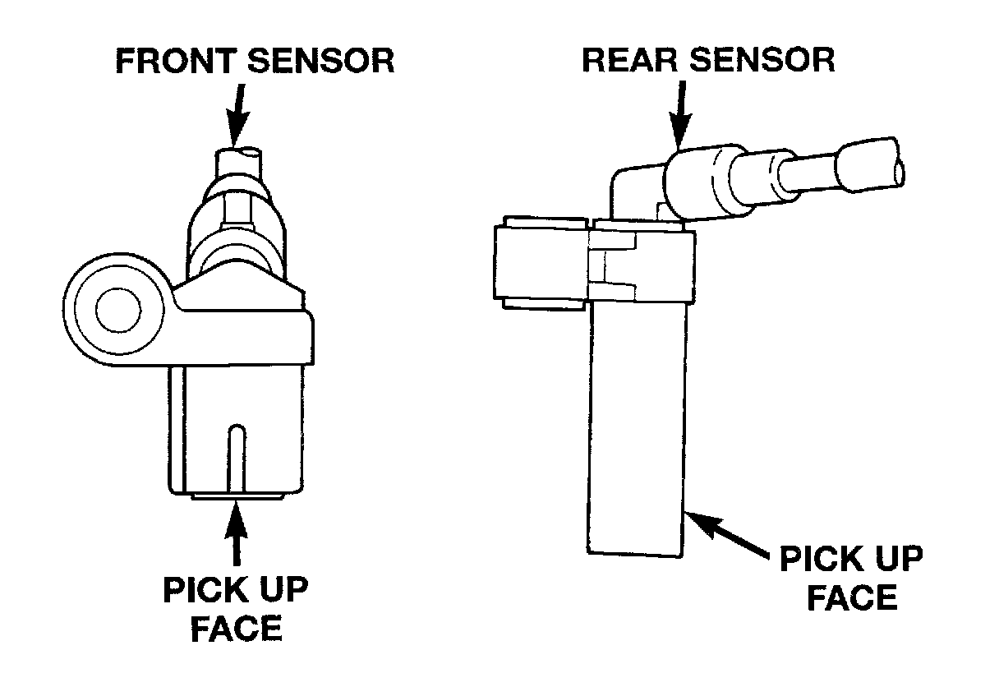

Wheel Speed Sensor: Description and Operation
WHEEL SPEED SENSORS AND TONE WHEELSOne wheel speed sensor (WSS) is located at each wheel and sends a small AC signal to the Controller Antilock Brake (CAB). This voltage is generated by magnetic induction when a toothed sensor ring (tone wheel) passes by a stationary magnetic sensor (wheel speed sensor). The CAB converts the AC signals into digital signals for each wheel.
A gear type tone wheel serves as the trigger mechanism for each sensor. The front wheel sensors are attached to bosses in the steering knuckles. The front tone wheels are mounted at the outboard ends and are integral parts of the front axle shaft. The rear sensors are mounted at the outboard ends of the axle.
Correct antilock system operation is dependent on tone wheel speed signals from the wheel speed sensors. The vehicle's wheels and tires should all be the same size and type to generate accurate signals. In addition, the tires should be inflated to the recommended pressures for optimum system operation. Variations in wheel and tire size or significant variations in inflation pressure can produce inaccurate wheel speed signals; however, the system will continue to function when using the mini-spare. When driven over rough road surfaces, the rear wheel speed sensor signals may be erratic and cause a false trouble code (drum brakes only).
Wheel Speed Sensors:

Different sensors are used at the front and rear wheels. The front/rear sensors have the same electrical values but are not interchangeable. The sensors have a resistance between 900 and 1300 ohms.
SPEED SENSOR AIR GAP
Front Sensor
Front sensor air gap is fixed and not adjustable. Only rear sensor air gap is adjustable.
Although front air gap is not adjustable, it can be checked if diagnosis indicates this is necessary. Front air gap should be 0.36 to 1.5 mm (0.014 to 0.059 in.). If gap is incorrect, the sensor is either loose or damaged.
Rear Sensor
A rear sensor air gap adjustment is only needed when reinstalling an original sensor. Replacement sensors have an air gap spacer attached to the sensor pickup face. The spacer establishes correct air gap when pressed against the tone ring during installation. As the tone ring rotates, it peels the spacer off the sensor to create the required air gap. Rear sensor air gap is 0.92-1.275 mm (0.036-0.05 in.).